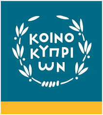

Selected client project
Bank of Cyprus
QuickCar UGC Campaign

Project
The objective was to promote QuickCar, Bank of Cyprus’ digital car loan experience, through relatable UGC content.
Rather than leading with loan features, the concept focused on the experiences, independence and emotions connected with owning a car before introducing QuickCar as the solution.
My role
Campaign conceptCreative scenarioScriptwritingFilmingVideo editing
Output
The final QuickCar Instagram Reel.
Next selected project.
Explore the Collaroid storytelling campaign.